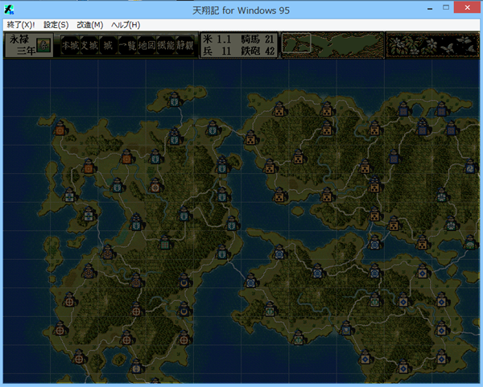

void カスタム::On_メインゲーム開始() {
}

void カスタム::On_メインゲーム開始() {
/*
弓適性や槍適性は、歴史上存在した武将に対してしか設定されていないため、
自作武将に対して、弓適性や槍適性を設定する。
*/
int iBushouID = Get_武将番号【配列用】("自作太郎"); // 自作太郎というのが自作武将だ。
// 居れば…
if ( 0 <= iBushouID && iBushouID < 最大数::武将情報::配列数 ) {
Set_弓適性( iBushouID, 弓適性::Ｓ );
Set_槍適性( iBushouID, 槍適性::Ｃ );
}
}
void カスタム::On_メインゲーム開始() {
/*
Set_武将状態《現役→浪人》の関数挙動を様々な武将で確認するため実験記述。
*/
int iBushouID = Get_武将番号【配列用】("真田幸隆"); // 真田幸隆の武将番号【配列用】を得る。
// 居れば…
if ( 0 <= iBushouID && iBushouID < 最大数::武将情報::配列数 ) {
Set_武将状態《現役→浪人》(iBushouID);
}
}